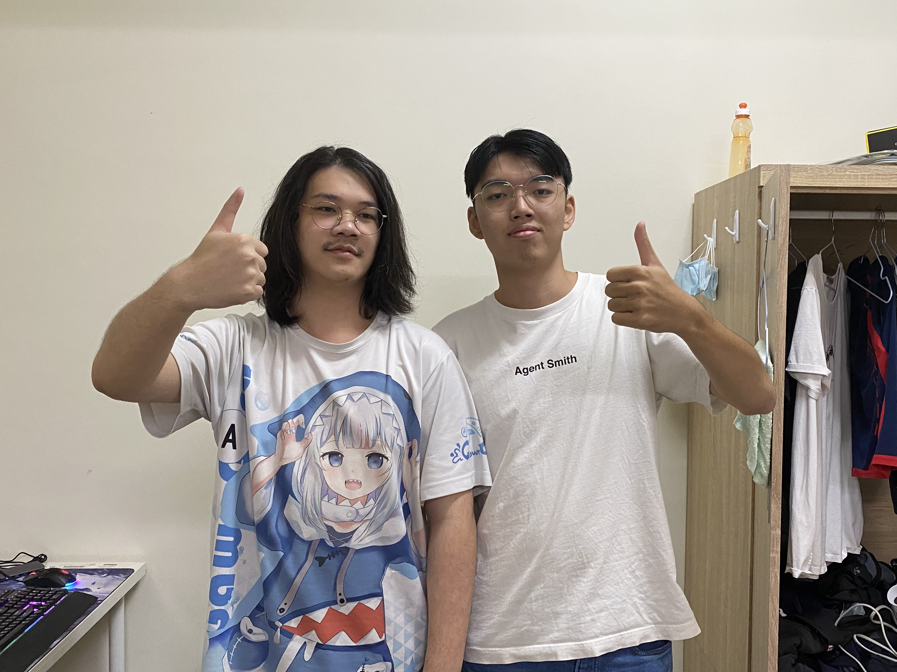
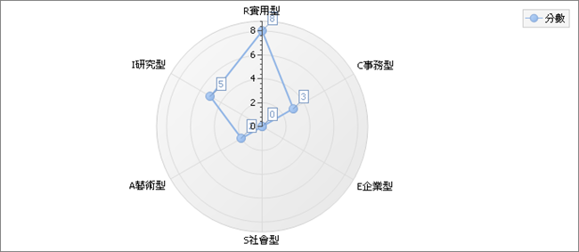
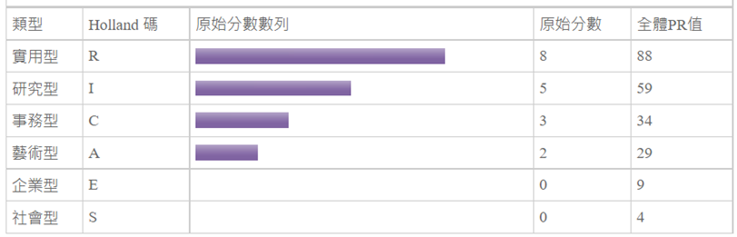

>
資管二B 411017496 黃順裕的求職相關資訊
自我簡介:
姓名:黃順裕(左)
性別:男
生日:西元2001/12/31
年齡:20
聯絡信箱:bally123133@gmail.com
應徵職務:MIS程式設計師



公司:花王(台灣)股份有限公司
職務內容:
1.配合公司部門需求，開發/撰寫適用之系統，以優化相關作業。
2.從前端頁面到後端資料庫建置、管理與後續維護公司內部系統(帳務系統、業務系統...等)
工作需求:
-熟悉ASP.NET、C#、VBA、MS SQL、JavaScript
-具備網頁設計經驗
-具備TOEIC 600分以上英文能力
自我介紹:
我是一個就讀靜宜大學資管二B喜歡Vtuber Gura的一位學生，因為對Vtuber的熱愛想往資訊及程式的方向發展，雖然現在實力不足，但在未來我會多多去接觸相關領域及精進自己